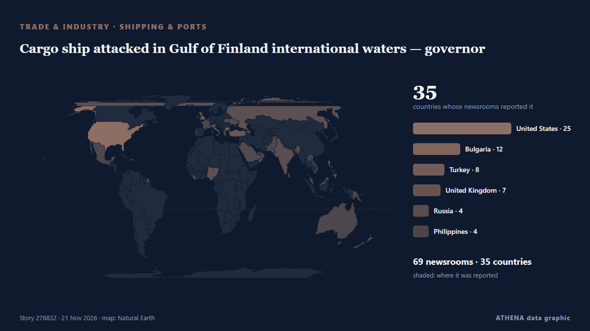

Shipping
Shipping and chokepoints today
Last 24 hours — events: 21, countries: 14. Highest risk now: 6.6 — British endurance swimmer Lewis Pugh swims in Strait of Hormuz to highlight war’s impact on wildlife.

Trade & IndustryCargo ship attacked in Gulf of Finland international waters — governor
All 12 crew members of the cargo ship BETUL 8, which sank in Bulgaria's exclusive economic zone in the Black Sea, have been rescued, the Bulgarian National Radio (BNR) reported, citing the conclusion… from Novinite
| 8 Nov | 9 |
|---|---|
| 9 Nov | 25 |
| 10 Nov | 25 |
| 11 Nov | 27 |
| 12 Nov | 24 |
| 13 Nov | 13 |
| 14 Nov | 14 |
| 15 Nov | 12 |
| 16 Nov | 23 |
| 17 Nov | 14 |
| 18 Nov | 20 |
| 19 Nov | 7 |
| 20 Nov | 8 |
| 21 Nov | 2 |
Maritime desk: ports, routes and incidents →
Trackers
Latest
Riyadh’s tallest skyscraper hit in Houthi strike
Riyadh’s tallest skyscraper, headquarters of the Saudi sovereign wealth fund, was struck on Thursday by a suspected Houthi missile in the latest blow in the Iran-backed Yemeni group’s war with the… from Daily Mirror
Riyadh financial district targeted, Aramco skyscraper damaged
An Aramco building in Riyadh was targeted in an "attempted attack", the Saudi energy ministry said on Sunday, with eyewitnesses telling AFP the skyscraper sustained damage, after the Saudi-led… from Al-Monitor
Iran: 7 ships hit in the Strait of Hormuz
Iran said on Thursday its navy hit seven oil tankers traveling through the Strait of Hormuz, threatening to exacerbate regional tensions and the global energy crisis that is driving inflation. from The Hill
Yemen government forces withdraw from area near Bab el-Mandeb Strait, Houthis in control
Yemeni forces fighting for the internationally recognised Saudi-backed government said on Sunday that they were withdrawing from an area overlooking the strategic Bab el-Mandeb Strait, leaving the… from Business Recorder
2 violating oil tankers explode in south Hormuz Strait: IRGC
TEHRAN, Nov. 15 (MNA) – The Public Relations Office of the IRGC Navy Force has announced that two oil tankers caught fire and exploded in southern Strait of Hormuz. from Mehr News (English)
Coalition Destroys 5 Houthi Ballistic Missiles, 4 Drones Fired at Saudi Arabia
Riyadh: Saudi forces on Tuesday intercepted a ballistic missile aimed at the kingdom's capital, said a spokesman for the Riyadh-led coalition backing Yemen's government, after auth... from Oman Observer
US orders diplomats to depart Saudi Arabia amid Houthi strikes
It comes after an escalation of the fighting in Yemen, opening another front in the Middle East conflict. from The Straits Times
CONTSHIP JET Container Ship Sinks After Drone Attack in Black Sea
The CONTSHIP JET sank after being struck by three drones off Bulgaria; 18 crew rescued, and 20 containers fell into the sea. from SeaNews Türkiye
2 oil supertankers catch fire after explosions in Strait of Hormuz: Iran
Why is Iran attacking tankers during peace talks? from Gulf News
US has conducted defensive strikes on some Iranian targets in the Strait of Hormuz, US official says
Several explosions were reported on Iran’s Qeshm Island, according to IRNA, though the cause remains unknown. from Arab News
Mideast crisis ‘largest threat’ to energy security ever: IEA
The crisis in the Middle East sparked in February by the US and Israeli bombing of Iran has created the "largest threat" to energy security in history, the International Energy Age... from Oman Observer
What this page covers
More than 80% of world trade by volume travels by sea (UNCTAD), and a handful of narrow passages carry much of it. This page follows incidents, port disruption and chokepoint risk as reported by independent outlets, with a risk score for each event.
Greece's merchant fleet is one of the largest in the world, so events at sea matter here more than in most places. The Maritime desk adds the state of ports and routes.
What we watch
- The Strait of Hormuz and the Gulf
- The Red Sea and Bab el-Mandeb
- The Suez Canal
- The Turkish Straits and the Black Sea
- The Panama Canal
- Sanctions on tankers and the shadow fleet